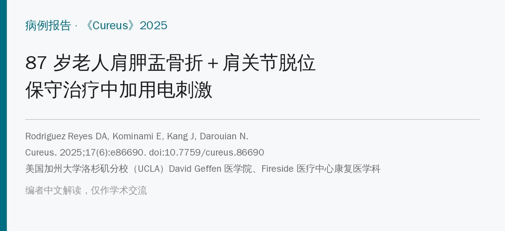
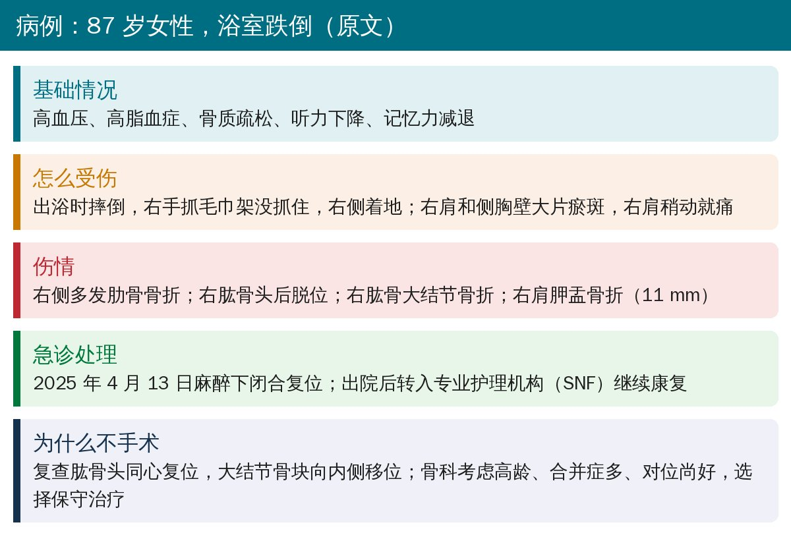
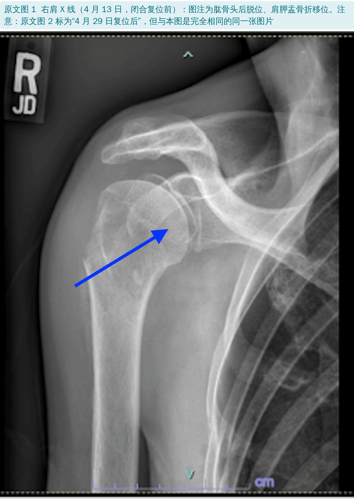
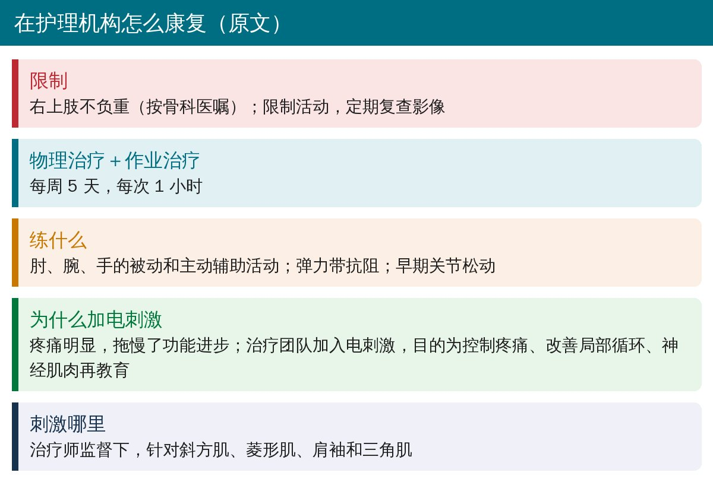
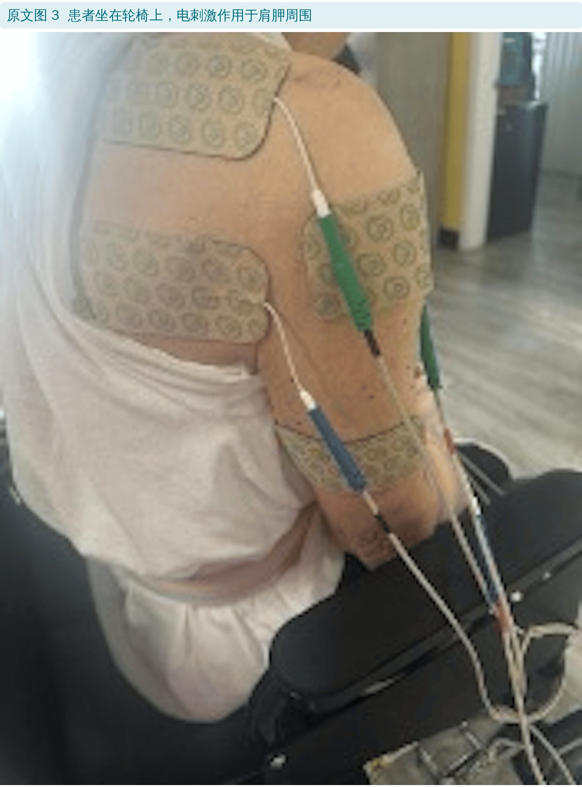
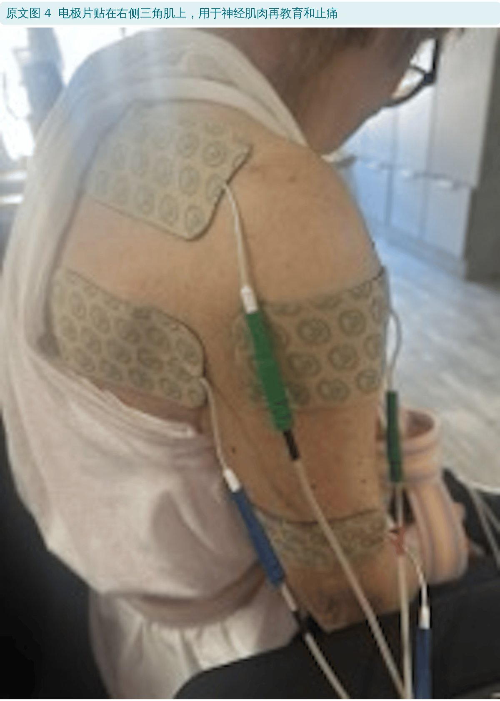
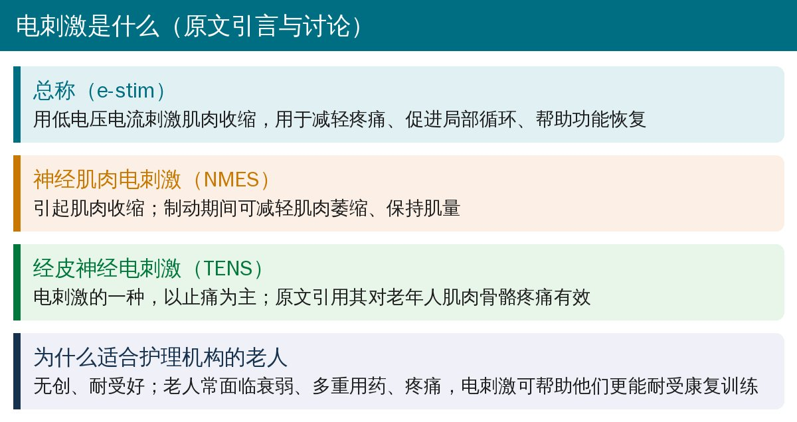
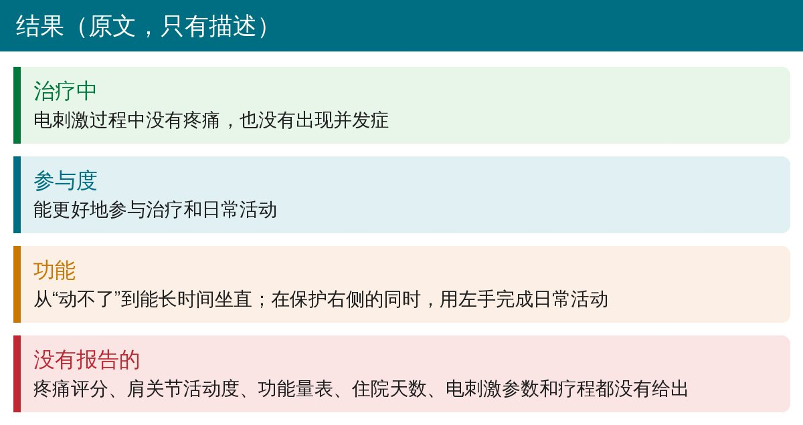
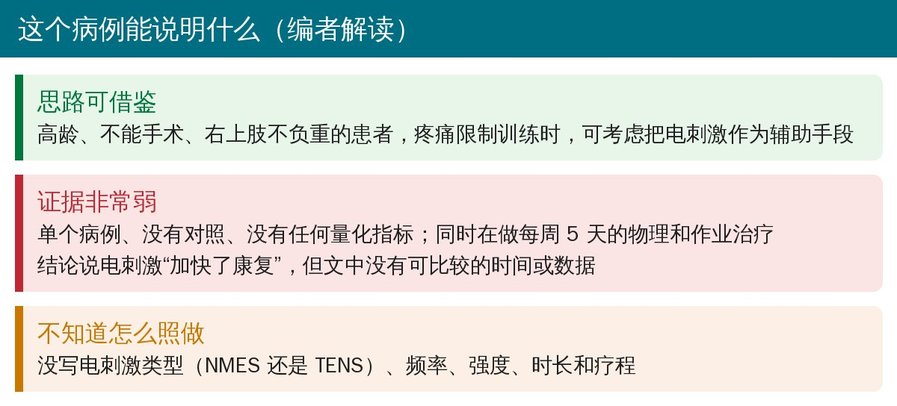

🔖原文信息（编者中文重排）
📚 文献信息
▪ Rodriguez Reyes DA, Kominami E, Kang J, Darouian N. Adjunctive Use of Electrical Stimulation (E-Stim) for Pain Relief and Rehabilitation in a Skilled Nursing Facility Patient Following Right Glenoid Fracture and Humeral Head Dislocation. Cureus. 2025;17(6):e86690. doi:10.7759/cureus.86690
▪ 作者单位：美国加州大学洛杉矶分校（UCLA）David Geffen 医学院、Fireside 医疗中心康复医学科
▪ 文章类型：病例报告（1 例）
• 87 岁女性跌倒后右肱骨头后脱位，合并肩胛盂骨折、大结节骨折和多发肋骨骨折；闭合复位后因高龄选择保守治疗
• 在专业护理机构（SNF）康复时疼痛明显、限制了训练，治疗团队在常规物理和作业治疗之外加用了电刺激
• 电刺激过程中无痛、无并发症；患者能更好地参与训练，从“动不了”到能长时间坐直、用左手完成日常活动
• 但没有任何量化数据，也没写电刺激参数，只能当作一个思路参考

🔖病例经过（据原文整理）

🔖原文图 1：复位前右肩 X 线
出院复查时，肱骨头已同心复位，但大结节骨块向内侧移位。骨科综合考虑患者的年龄、合并症以及肩关节对位尚好，没有手术，建议物理治疗、限制活动和定期复查影像。

🔖康复安排（据原文整理）

🔖原文图 3：坐在轮椅上进行肩胛周围电刺激

🔖原文图 4：三角肌上的电极片
电刺激在治疗师监督下进行，针对斜方肌、菱形肌、肩袖和三角肌，目的有三个：控制疼痛、改善局部循环、神经肌肉再教育。原文没有说明具体用的是哪种电刺激、频率和强度是多少、每次多长时间、一共做了多久。

🔖电刺激简介（据原文引言和讨论整理）

🔖结果（原文只有文字描述）

🔖编者解读
• 单个病例、没有对照，也没有疼痛评分、活动度、功能量表等任何量化指标
• 电刺激是在每周 5 天、每次 1 小时的物理和作业治疗基础上加用的，无法区分是谁起的作用
• 结论说电刺激“加快了康复”“缩短住院时间”，但文中没有任何可供比较的时间数据
• 图 1（4 月 13 日，复位前）和图 2（4 月 29 日，复位后）是完全相同的同一张图片，图注却分别描述为脱位和已复位
• 讨论把文献 [5] 说成“荟萃分析”，实际是一项偏瘫肩关节半脱位的随机对照试验；文献 [6] 被引为术后电刺激证据，实际是老年人运动建议指南
• 高龄、不能手术、患肢不负重的患者，疼痛常常是康复的最大障碍；在常规训练外，可考虑加电刺激帮助控制疼痛、提高训练耐受度
• 患侧受保护期间，同样要练健侧和肘、腕、手，尽早恢复坐位和日常自理
• 使用时选择好类型（以止痛为主的 TENS 或以引起肌肉收缩为主的 NMES）并记录参数和疼痛、功能变化，才能判断是否真的有效
欢迎关注骨科康复小黄公众号，获取更多物理治疗的专业知识！
📄参考文献：
Rodriguez Reyes DA, Kominami E, Kang J, Darouian N. Adjunctive Use of Electrical Stimulation (E-Stim) for Pain Relief and Rehabilitation in a Skilled Nursing Facility Patient Following Right Glenoid Fracture and Humeral Head Dislocation. Cureus. 2025;17(6):e86690. doi:10.7759/cureus.86690
原文以知识共享署名 4.0（CC BY 4.0）协议开放获取。原文图 1、3、4 引自原文，图像未作修改（原文图 2 与图 1 为同一张图片，未重复使用）；整理卡为编者根据原文撰写。